Crop photo credits
Thank you to the photographers who make these images available through Wikimedia Commons.
These are illustrative crop photos. Images are displayed as resized thumbnails with a square CSS crop; their original files are linked below. Each photo retains the license shown.
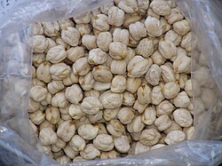
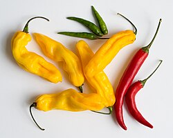
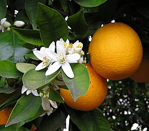
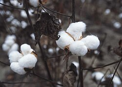
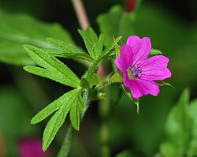
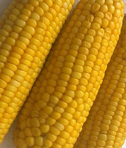
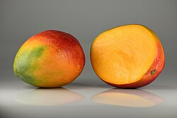
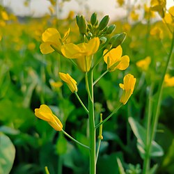
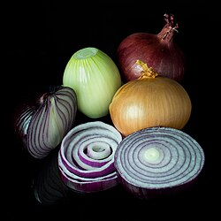
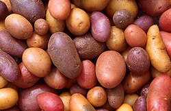
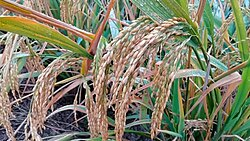
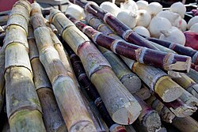
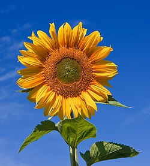
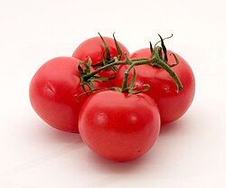
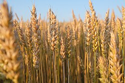